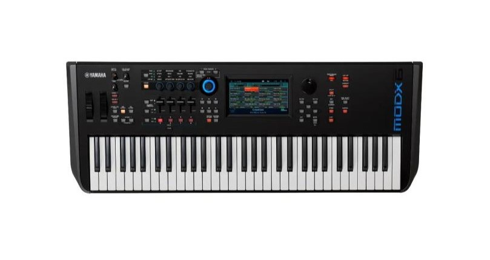

Tipos de Teclados

Teclados Arranjadores
Os teclados arranjadores são projetados para músicos que precisam de um acompanhamento automático. Eles são ideais para apresentações ao vivo e para músicos solo. As principais características incluem:
- Acompanhamentos Automáticos: Oferecem ritmos e estilos predefinidos que acompanham a melodia tocada.
- Facilidade de Uso: Interface intuitiva que permite mudar estilos e sons rapidamente.
- Banco de Sons: Grande variedade de sons e instrumentos.
- Funções Extras: Muitos vêm com recursos como gravação, mixagem e efeitos.
Exemplo de teclado arranjador

Teclado Arranjador Yamaha PSRS975 61Teclas Sensitivas
Sintetizadores
Os sintetizadores são teclados voltados para a criação de novos sons. Eles são amplamente usados em estúdios de gravação e performances ao vivo. As principais características incluem:
- Modulação de Som: Permitem criar e modificar sons a partir de formas de onda básicas.
- Controles de Efeitos: Oferecem controles para ajustar parâmetros como ataque, decaimento, sustentação e liberação (ADSR).
- Versatilidade: Capazes de reproduzir sons que vão desde instrumentos tradicionais até timbres completamente novos.
- Tipos de Síntese: Incluem síntese subtrativa, aditiva, FM (modulação de frequência), entre outras.
Exemplo de teclado sintetizador

Teclado Sintetizador Yamaha MX61 BK
Workstations
Os workstations são teclados multifuncionais que combinam a capacidade de sintetização com recursos de arranjo e gravação. Eles são ideais para produção musical completa. As principais características incluem:
- Sequenciador Integrado: Permite gravar e editar múltiplas faixas de áudio e MIDI.
- Banco Extenso de Sons: Incluem uma vasta biblioteca de sons e efeitos.
- Ferramentas de Produção: Possuem ferramentas de edição de áudio e MIDI, mixagem e efeitos integrados.
- Conectividade: Oferecem várias opções de conectividade, incluindo MIDI, USB e interfaces de áudio.
Exemplo de teclado workstations

Teclado workstation YAMAHA MODX6 61 TECLAS
Controladores
Os teclados controladores são usados para controlar outros instrumentos MIDI ou software de produção musical. Eles não possuem sons próprios e dependem de outros dispositivos. As principais características incluem:
- Sem Sons Integrados: Servem apenas para controlar outros dispositivos MIDI.
- Customização: Podem ser altamente configuráveis para se adequar às necessidades do usuário.
- Conectividade: Geralmente possuem conectividade USB e MIDI.
- Funcionalidade: Muitos vêm com pads, faders e knobs para controlar diversos parâmetros.
Exemplo de teclado controlador

Teclado Controlador M-audio Oxygen 61 Mkv 61 Teclas Midi Usb
Pianos Digitais
Os pianos digitais são projetados para replicar a experiência de tocar um piano acústico, mas com a conveniência e versatilidade dos eletrônicos. As principais características incluem:
- Ação de Teclas: Simulam o peso e a resposta das teclas de um piano acústico.
- Qualidade de Som: Sons de piano gravados de alta qualidade e amostragem avançada.
- Recursos Adicionais: Muitos oferecem recursos como metrônomo, gravação, e diferentes vozes de piano.
- Portabilidade: Mais leves e compactos do que pianos acústicos.
Exemplo dee piano digital

Casio cdp-s90 piano digital